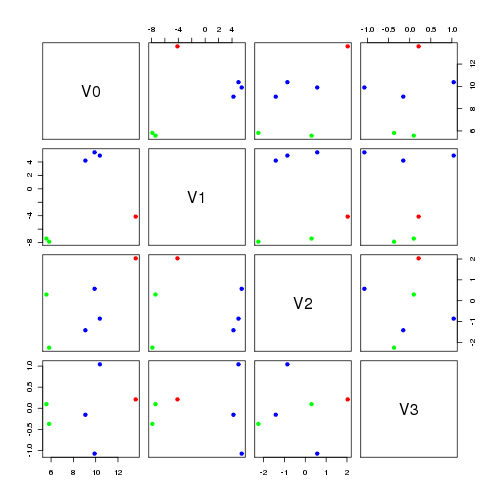
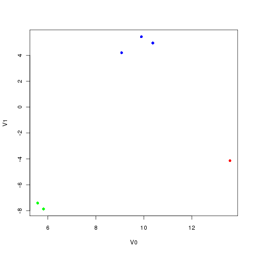
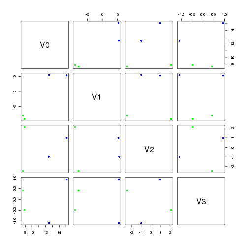
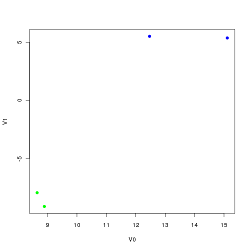

the original matrix A describes the corpus through the relationshop of terms (rows) and documents (columns) matrices U and V introduce a new concept, the feature. U describes the relationship between terms (rows) and features (columns) Vt describes the relationshop between features (rows) and documents (columns) usually though we discuss V, where the documents are rows and features are columns, and the decomposition is expressed in terms of the transpose of V
interpretation of S
the matrix S is always a diagonal matrix with non-negative decending values, formally known as the singular values. each of the values describes how much "variance" each feature describes
in our case we have the 4 singular values; 23.1, 14.3, 3.5, 1.5 first two are dominant and give the most variance
interpretation of U
the matrix US describes the relation between terms in the corpus 
interpretation of VS
the matrix VS describes the relation between documents in the corpus 
low rank approximation
U= 0.48 -0.31 0.85 -0.03 0.19 0.94 S= 3.50 0 0 0.76 Vt= 0.62 0.38 0.68 -0.50 -0.46 0.72though this is not our primary focus it illustrates that the eigen values are orthogonal and can be used independently
latent semantic analysis
latent semantic analysis (lsa) is a way of comparing text by way of comparing their features. one way to generate the features for
what is? it's a way of latent semantic analysis is a way of one way to cluster documents is to latent semantic analysis is oneas a way of clustering documents.A3
there is enough variance to know have 4 dimensions of variance, though as expected the first two dominant the second two.
| 36.342 |
| 24.679 |
| 2.644 |
| 1.120 |
VS matrix; docs
| V1 | V2 | V3 | V4 |
| 15.196 | -15.033 | 0.803 | 0.674 |
| 14.416 | -13.447 | -0.899 | -0.734 |
| 20.770 | 9.828 | 1.700 | -0.357 |
| 21.227 | 10.278 | -1.627 | 0.365 |
| 12 | 11 | 0 | 2 |
| 13 | 12 | 1 | 0 |
| 12 | 11 | 12 | 11 |
| 0 | 2 | 11 | 13 |
| 0 | 0 | 11 | 12 |
| 1 | 0 | 12 | 11 |

US matrix; terms
| V1 | V2 | V3 | V4 |
| 10.549 | -12.471 | -1.328 | 0.657 |
| 10.768 | -14.059 | 0.510 | -0.368 |
| 22.664 | -3.944 | 0.848 | -0.227 |
| 14.673 | 8.705 | -1.610 | -0.572 |
| 13.296 | 9.378 | -0.314 | 0.413 |
| 13.701 | 8.751 | 1.248 | 0.370 |
| 12 | 11 | 0 | 2 |
| 13 | 12 | 1 | 0 |
| 12 | 11 | 12 | 11 |
| 0 | 2 | 11 | 13 |
| 0 | 0 | 11 | 12 |
| 1 | 0 | 12 | 11 |